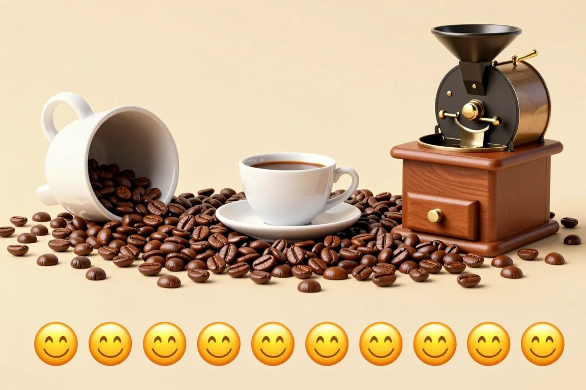

веб · 2024–now · также: Слоп, Приманка-картинка от ИИ, Искусство-наполнитель для ленты
Массово сделанные сгенерированные картинки в соцсетях: пластиковый глянец, безликий сюжет, перекошенные руки, поддельный текст и подпись-приманка. Слово slop для такого контента распространилось в 2024 году.

Главная идея
Картинка существует, чтобы заполнять ленту: у неё высокий лоск, нет автора и нет смысла, а мелкие ошибки выдают отсутствие заботы.
Принципы дизайна
Выбирайте безликий эмоциональный сюжет: ребёнок с тортом, бревенчатая хижина на закате, животное из фруктов.
Рендерьте сюжет с полным глянцем и тёплым свечением (#FFD08A) при насыщенности 120%.
Оставляйте в каждой картинке 1–3 дефекта: лишний палец, вывеску с ложными буквами или шов на фоне.
Ставьте над картинкой подпись-приманку 16–20px простым гротеском, с 2–4 эмодзи.
Добавляйте под картинкой ряд реакций с 3 круглыми значками и счётчиком 14px.
Берите квадрат 1:1 или кадр 4:5 шириной 1080px с тонкой светлой рамкой 1px на светло-серой ленте (#F2F3F5).
Публикуйте один сюжет в 6–12 почти одинаковых копиях с небольшими изменениями цвета или кадра.